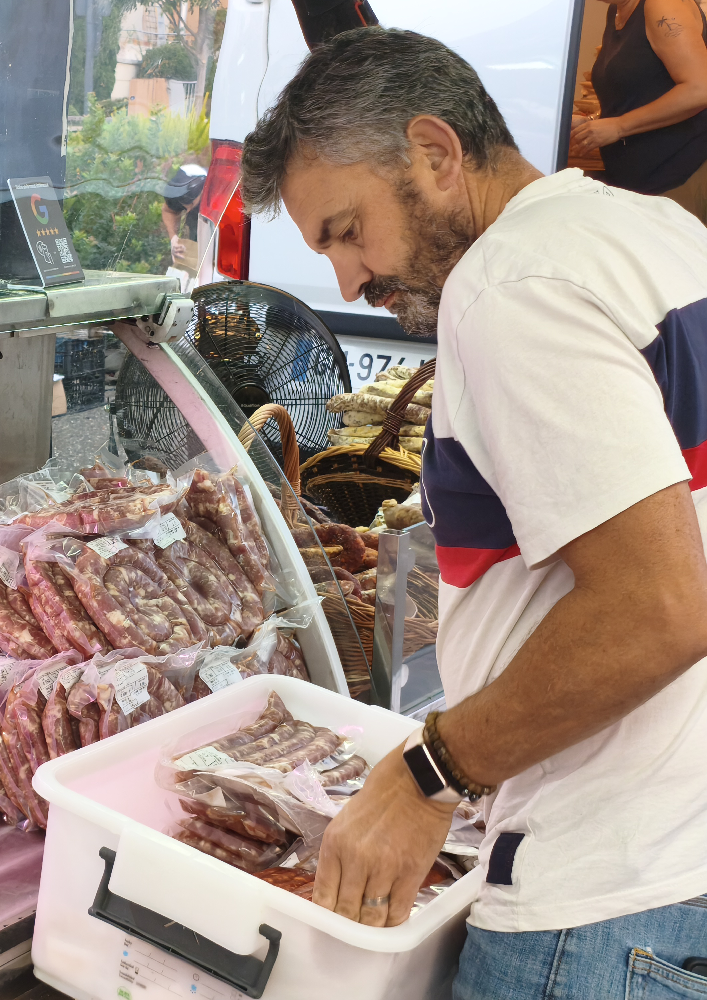

SEBASTIEN
Dit -Le Boss
Le goût du vrai.
Le savoir-faire en héritage.
Jambons affinés, terrines maison et spécialités du Tarn : des produits généreux, préparés avec passion et dans le respect de la tradition.
Une maison où le geste compte autant que le goût.
Des recettes préparées avec patience, des produits choisis avec attention et un savoir-faire qui se transmet au fil des années.


Fait avec passion
Dans notre atelier


Nos incontournables
Des spécialités généreuses, élaborées chaque semaine dans notre atelier.

Le Jambon Blanc Truffé
34 € / kgCuit lentement au bouillon, avec brisures de truffe noire d'été. Doux et fondant.

Pâté en Croûte Tradition
28,50 € / kgPâte pur beurre croustillante, farce de porc fermier, foie de volaille et pistaches.

Saucisson Sec de Lacaune
6,80 €Affiné 8 semaines en séchoir naturel, gros grain, ail et poivre noir concassé.
Nos idées recettes gourmandes
Mettez en valeur nos produits artisanaux à travers des recettes simples et savoureuses à réaliser chez vous.
Croque-monsieur truffé au Jambon Blanc
Sublimez un simple croque-monsieur en tranche épaisse avec notre Jambon Blanc Truffé, du comté affiné et une touche de béchamel maison. Un délice fondant !
Salade tiède paysanne au Pâté en Croûte
Poêlez légèrement de belles tranches épaisses de notre Pâté en Croûte Tradition et déposez-les sur un lit de salade croquante, noix du Tarn et vinaigrette au miel.
Où nous trouver ?
Retrouvez notre stand sur les marchés traditionnels du Tarn chaque semaine pour faire le plein de saveurs.
Marché de Gaillac
Place de la Libération. Retrouvez notre étal face aux producteurs de vin local.
Marché d'Albi
Place du Vigan et Halles couverte. Le rendez-vous incontournable des gourmands tarnais.
Marché de Castres
Place Jean Jaurès. Venez composer votre plateau apéritif dominical ensoleillé.
Venez nous rendre visite
Retirez vos commandes en boutique ou venez composer votre plateau apéritif sur-mesure directement au comptoir.
📍 12 Rue de la République, 81000 Albi
🕒 Mar - Sam : 8h30 - 19h30 | Dim : 8h30 - 13h00
📞 05 63 00 00 00